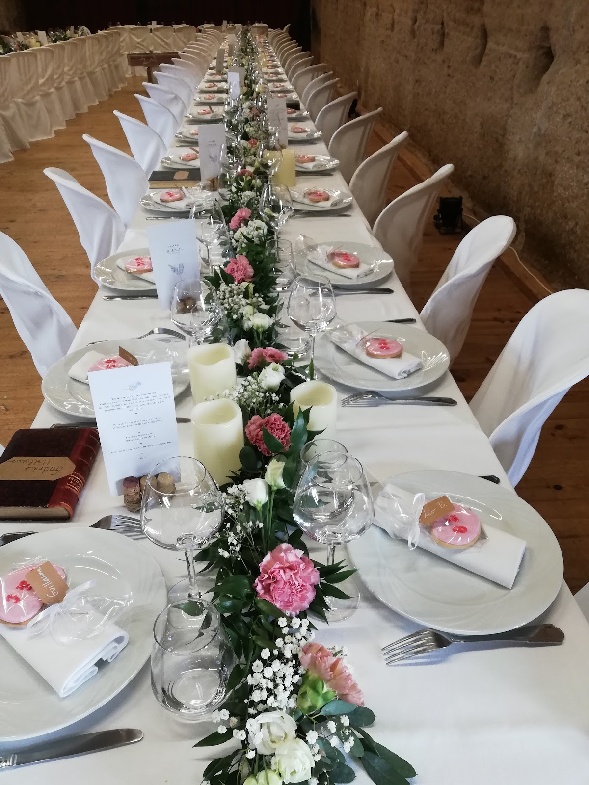
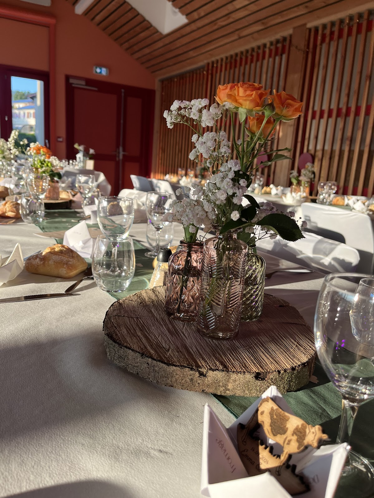
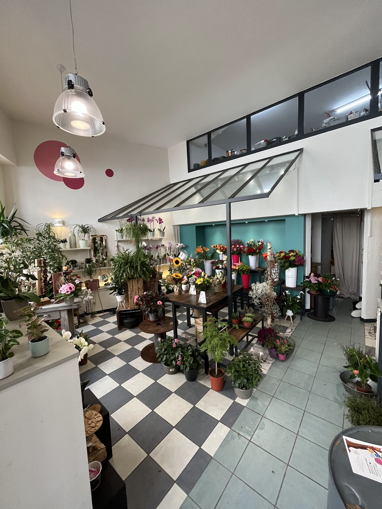
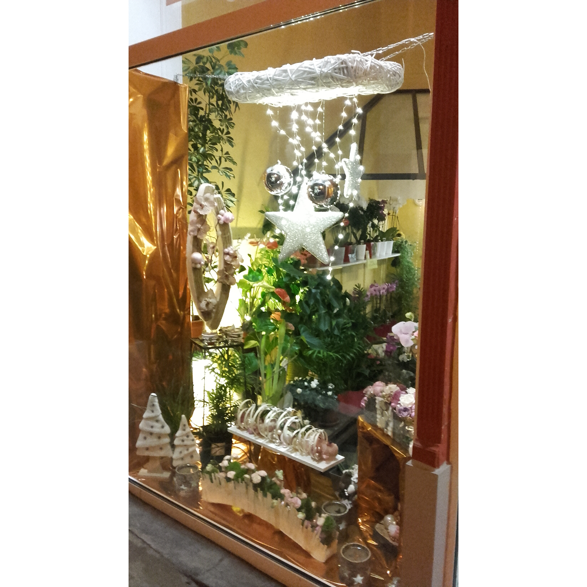

01 / 03
Bouquets & compositions
Un bouquet pensé comme une attention personnelle : harmonies de couleurs, textures et volumes se répondent pour créer une composition expressive et équilibrée.
Commander par téléphone ↗Artisan fleuriste à Panissières
Bouquets, compositions et créations florales pour accompagner les petites attentions comme les grands moments.
Pour offrir, célébrer, remercier ou simplement faire plaisir.
Flore & Sens imagine des compositions aux associations délicates, avec une attention portée aux couleurs, aux volumes et à l’émotion recherchée.
Parler de votre envie ↗01 / 03
Un bouquet pensé comme une attention personnelle : harmonies de couleurs, textures et volumes se répondent pour créer une composition expressive et équilibrée.
Commander par téléphone ↗
02 / 03
Des compositions florales qui prolongent l’ambiance de votre événement, du bouquet de mariée à la décoration de table. Un avis client souligne notamment une proposition élégante, une communication fluide et une livraison ponctuelle.
Échanger sur votre événement ↗
03 / 03
Pour une visite spontanée ou une attention à offrir, la boutique réunit fleurs, compositions et petites idées cadeaux. Les avis mettent en avant la variété des propositions et les nouveautés.
Découvrir la boutique ↓
La boutique
Entrez, regardez, échangez. La boutique met les fleurs et les plantes en scène dans un univers lumineux et chaleureux, pensé pour donner envie de composer, d’offrir et de se faire plaisir.
« Le magasin vient d’être refait. C’est magnifique. Une belle mise en valeur. »— Lydie Thévenet, avis Google Itinéraire↗
Quelques créations
Une palette de couleurs, une table à habiller, un bouquet à offrir : chaque composition prend une autre dimension quand elle rencontre le bon moment.

Vos mots comptent
« Un grand merci à cette boutique pour avoir créé des compositions florales parfaites pour mon mariage. Nous avons seulement donné le thème, et ils ont proposé une solution à la fois élégante et économique, bien au-delà de nos attentes. Les fleurs pour la grande table et le bouquet de mariée étaient magnifiques, parfaitement assorties au style, et tous les invités ont été impressionnés ! Service professionnel, communication fluide et livraison ponctuelle. Je recommande vivement ! »
« Ludivine est aussi merveilleuse que ses fleurs 🌸 Elle a toujours de belles propositions de nombreuses variétés. A la pointe des tendances et tout pleins de petites idées cadeaux. 🙏 »
« Ludivine a été intentionné et gentille lors qu'on a choisi notre fleur! Merci pour l'échange du petit lapin rose! On retournera 🫶🏼 »
« Une dynamique fleuriste . Souvent des nouveautés et de belles idées cadeaux à tous les prix Le magasin vient d'être refait. C'est magnifique. Une belle mise en valeur »
Horaires
Questions fréquentes
Vous pouvez contacter la boutique pour parler d’un bouquet, d’une composition florale, d’une décoration de mariage ou d’événement, ou d’une idée cadeau. Le plus simple est d’expliquer l’occasion, l’univers recherché et vos préférences afin d’échanger sur une proposition adaptée.
Appelez directement Flore & Sens au 04 69 33 10 93. Vous pourrez préciser l’occasion et le style recherché avant de convenir des détails avec la boutique.
Oui. Un avis client publié en 2025 mentionne la réalisation de compositions pour une grande table ainsi que d’un bouquet de mariée, avec un accompagnement autour du thème choisi.
Flore & Sens se trouve au 40 Rue de la République, 42360 Panissières. Le bouton « Itinéraire » ouvre directement Google Maps pour vous guider.
La boutique est ouverte lundi, mardi, jeudi, vendredi et samedi de 09:00 à 12:00 puis de 15:00 à 18:30, et le dimanche de 09:00 à 12:30. Elle est fermée le mercredi.
Oui. Plusieurs avis clients mentionnent des petites idées cadeaux et des nouveautés en boutique, en complément des fleurs et compositions.